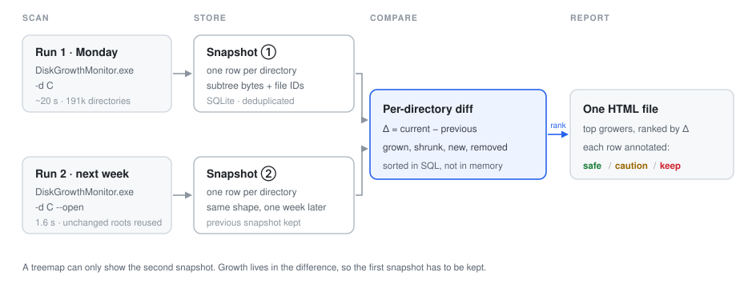

See what grew since last week — not just what is big now.
看见「这周什么长大了」，而不只是「现在什么大」。
A Windows command-line tool that snapshots per-directory disk usage into SQLite, diffs every run against the previous snapshot, and turns the result into one self-contained HTML report.
WizTree and TreeSize answer “what is big right now”. This answers the question you actually ask when your drive fills up: “what grew, and is it safe to delete?”
The sample reports below were generated from a synthetic demo tree (about 2,700 directories / 3,100 files / 328 GB), so no real machine data is shown. The layout, numbers and wording are exactly what the tool produces.
Two scans, two snapshots, one diff. The first snapshot is kept precisely because a treemap can only ever show the second one.

Source code, full documentation and release downloads:
Single Windows executable, .NET Framework 4.5 — no runtime to install. MIT licensed.